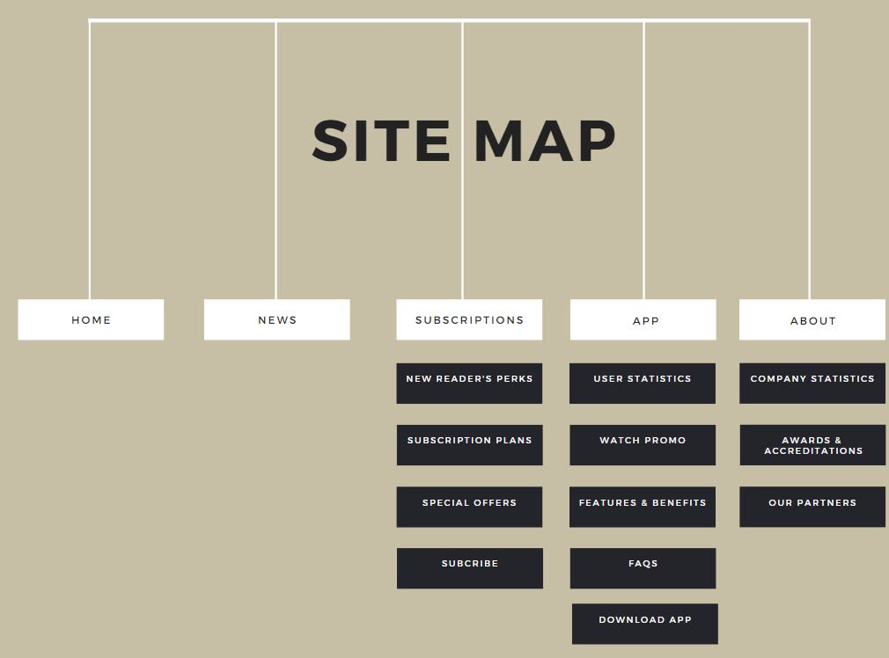
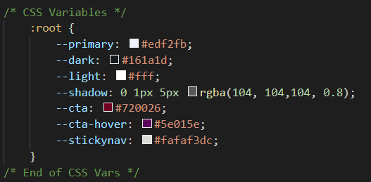
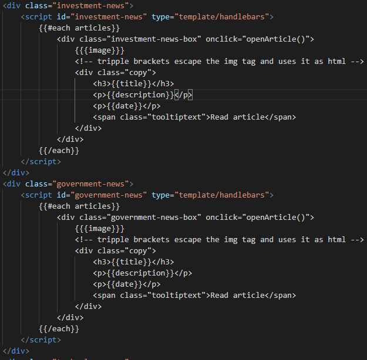

The Investor Website Reflective Report
By Kliment Paskalev
Introduction
The website prepared for this project is named after a fictional financial and economic magazine called The Investor. The Investor is a fictional leading industry magazine that mainly focuses on news and affairs that directly and/or indirectly affect the economic states of countries and financial instruments such as bonds, stocks, cryptocurrencies, futures, and energy markets.
The Investor website presents the digital presence of the magazine as it strives not only to keep the market share of the magazine regarding paperback sales, but to also ensure that The Investor can have an online position on the web and benefit from organic SEO leads. The website does not only serve as a strong marketing tool but also attempts to contribute to the publisher’s performance as the main journey of the website always concludes in offering the user the option to subscribe and become a regular reader.
The website has 5 pages. A home page which presents to the user some of the latest news, general statistics about the company, its partners, and the mobile app. An App page that promotes the new mobile app that the magazine has developed so that people can read on their phones. A News page where users can filter through and choose articles to read on different topics. An About page which emphasizes more on the history of the company, more statistics, and awards. Lastly, a Subscription page which offers a variety of subscription plans to the user along with some special offers if the user falls in a particular socioeconomic group.
Inspiration
My main inspiration comes from my previous studies on a course BSc Economics, Finance and Banking. I was an avid reader of economic magazines and I really found them useful to my studies. Back then I dreamt of the day when I could have my own website and write my own financial analysis blogs and reports. The Investor website has undoubtedly made this dream halfway true since it helped me learn many things for the creation of a website and its design.
My second strongest inspiration is the Economist magazine. Since I was reading it regularly, I had some understanding of how an online journey for a magazine should be, making the subscription easy for every user and offering different plans and discounts.
It also served as an inspiration to see around 90% of the people in the tube (subway, metro in other languages) reading from a phone, tablets, or kindle when I was abroad in Lyon, France. Seeing so many people using every minute while they are travelling to read from a mobile design made me realise that a magazine should definitely have a website and an application that supports mobile devices and facilitates reading while being out and about. Personally, I would always go for the hardcopy, but it always seems more convenient to read from a device rather than carry the magazine with you.
Accessibility
In terms of accessibility of the website, I have used the World Wide Web Consortium website for guidelines and advice-seeking.
- https://www.w3.org/WAI/fundamentals/accessibility-intro/
- https://www.w3.org/WAI/test-evaluate/preliminary/
To begin with, the most crucial of all accessibility features, in my opinion, is that the website does not have any blinking, moving, flashing or constantly colour-changing elements. This is important since some readers may have photosensitive epilepsy and will, therefore, be at risk of seizures if the website had these features. Other users may have a disability that prevents them from concentrating and focusing on a piece of content. A moving element on the page can be a distraction and make reading the content difficult.
Secondly, for users with reading difficulties or visual impairments, all images have an alternative text attributed to them so that the information they convey can be read.
In a similar fashion, elements on the website that can perform an action such as buttons and links have a title so that upon hover the user can read a prompt on what a click would do.
Additionally, the website facilitates a good text-to-background contrast ratio according to W3C checks. Having the appropriate colour contrast surely determines the readability of the website content and will make easier for users to read from.
Last but not least, the website complies with the basic structure test requirements since it has a responsive design which realigns elements and resizes text according to the viewport of the device. This ensures that the user experience will benefit from all the content that is on the website with good readability.
Usability
Bad usability would imply bad design and UX that also harm the overall journey and accessibility. This can be a low contrast between elements’ colours, huge or small font size, elements overflowing and stepping on each other and a poor or too rich choice of colours and font family styles.
First and foremost, the design of the Investor website makes it easier to distinguish between all elements on the page. There is always enough spacing between elements and a box-like design with shadows provides a better understanding of the overall structure. There is padding between different sections on each page so that the structure can be easily recognised and that each section holds different content.
Each section has its heading (usually a H2), and the elements inside have their own heading (H3 or H4) which contributes to making the hierarchy of content easier to comprehend. Font sizes tend to steadily reduce when it comes to going from H1 to p, as the font size also takes into consideration the element in which the text is put. Some elements tend to tell a bigger story and not focus so much on the background so they use a smaller font size, like the About us banner, and other elements tend to convey the main message via the heading and an image so the
there is a larger size but short and concise catch-phrase, such as the Subscription page Special Offers block model. All these text decision attempt to provide better usability and readability of the website.
Another usability decision is the choice of 5 main colours that are used on the website and 2 supporting colours.
The Primary and Light colours are used as backgrounds and serve to distinguish between the background of the page and box-elements while ensuring text can be read easily on top. Dark is the colour which is usually used for text, or in some cases where Dark is the background, the text on top will be Light. Cta and Cta:hover are the colours mainly of buttons, whereas Cta is also used on many other small elements such as bullet points and icons, since the main theme of the Investor is a dark red colour. Shadow and Stickynav are both variations of the black and white spectre of colours, carrying the main difference that they are partially transparent with a lowered alpha number in rgba.
The navigation is simplistic and easy to interact with on any device. On larger screens it offers a dropdown sub-navigation that can take users to specific sections of the page which will help them save time and find the information they need quickly. This may reduce the bounce rate which is when a user goes onto the website and then clicks or does something which takes them outside the website, which we would not like. Some level of interactivity by hover animations also try to engage the user and present information in a more pleasing way.
This ensures a better design and UX of the website.
Learning
The three main things and steep learning curves for me were learning how to use CSS Grid, Handlebars, Mustache and Handlebars Partials (this as one), and writing my own JavaScript code that works together with Handlebars and provide user interaction on the website.
CSS Grid
I started with the basics of learning grid and how I could use it to structure the website by reading from W3Schools (W3Schools CSS Grid). For more intermediate techniques such as using grid inside a div to align its children elements differently on different devices, I read from MDN Mozilla (Developer Mozilla - Grid) and CSS Tricks (CSS Tricks - Grid).
Handlebars
Handlebars and Mustache were a bit hard to learn since I had never heard about them before the course. Ever since my Wireframing before I started writing the website, I was determined that I could somehow use Handlebars to compile news results. I began by learning the basic usage and expressions (https://handlebarsjs.com/guide/expressions.html) and how to create a template. I then started learning how to escape HTML because it was needed for my tags for the article results (Handlebars HTML Escaping). I then switched to learning Helpers and more specifically how to use the #each helper https://handlebarsjs.com/guide/builtin-helpers.html#each, since it was most relevant for my purpose. Finally, Partials was needed to complete my idea (Handlebars Partials). This code can be seen in the Partials folder called news.js, the templates are used on news.html.
JavaScript
Everything that I have learned in the other module Introduction to Programming really came into practice with this project. I used the splice method to take each value of the input (tick boxes on news.html page) and assemble an array of those values. When the function to compile each handlebars template of articles is triggered, the array is checked whether it contains the ticked tick box value for that category of articles and if yes, then it compiles them. To compile the news, I have used objects in arrays that contain all the elements of each articles: heading, paragraph text and image. In each compiling function it is also checked whether a variable indicates if the news have already been compiled or not, to mitigate duplication. Furthermore, unticking a tick box and clicking the filter button again would check if the news are compiled and if they are visible, if both variables for these features point affirmative, the function then will make the articles not render, since the tick box is unticked. This all happens via if statements and conditions in the functions. I also went along with a short experiment with using jQuery in some places which was great experience. It was quite a lengthy endeavour and a lot of experimenting while writing this in the best way but it was surely worth it.
Evaluation I
In my opinion, the Investor website has a great design and layout. I really like the symmetry and balance between elements and how images stand out on the light background. Using CSS grid turned out a great experience and the result is really appealing. I will continue to learn better ways of using Grid as it may be applied to achieve even better responsive designs. I think this mainly focuses on how my CSS skills have improved during these past months. I now know how to use media queries which apply according to different screen sizes, how to use :before and :after pseudo-elements which is really handy, how to use CSS Grid and all its features, and a variety of hover animation effects. The CSS Grid has different grid-template-columns and grid-template-areas for each media query, which makes the website look well on any device.
Secondly, I am pleased with the progress I have made from starting this course with regards to JavaScript. My JavaScript for the website manipulates the DOM and changes the CSS of elements which makes the website interactive. The FAQ accordion on the App page, the carousels on the Home page and on the Subscriptions page, the automatic slideshow banner on the News page, the sticky navigation, all have been successful. This boosts my motivation to learn even more JavaScript as I can now see its potential.
Furthermore, I think the attempt at making a filter-able news feed on the news.html page has been successful. I achieved more than I was hoping for initially, since the idea at first was to cause just one array of news to be compiled without any filter categories, and those would only have a heading and description as it was given in the course tutorials on Handlebars. However, I decided to aim higher and create several different categories of news. I also managed to add a separate to each of the articles which required escaping the html in the template. Again, the JavaScript I managed to achieve while writing my handlebars compiler works perfectly for the purpose it was written. I can recognise whether the articles are compiled and whether they are displayed and according to the tick boxes checked it would compile/render or hide the articles. In spite of many failed attempts and struggles making this work as it should, I am really glad it turned out well in the end.
Evaluation II
Firstly, there is one main drawback of my news.html handlebars compiler. Each news category renders the news from that category in its own container and no other article that is from a different category can be rendered in there. This is because the current code compiles different batches of articles in different handlebars templates:
To make each template work, the partials/news.js contains the same function several times which applies to each separate template by compiling html using a different array of objects for each news category. However, I think there was a code philosophy lesson in Introduction for Programming which stated that if one needs to rewrite the same chunk of code several times, then there is surely a smarter and shorter way to write the code without being repetitive. However, with many trials and errors, I could not manage to achieve this, sadly. Nevertheless, I am sure there is a JS or handlebars way of achieving this and I am eager to learn how to build on my past experience.
Secondly, each article has its own publish date. It would be nice to use that date in order to sort and render the articles from latest to oldest. Currently, as explained in the above paragraph, the articles on news.html are rendered in the same order as their handlebars template is written in the news.html code. Of course, this makes the news feed a bit limited in terms of logic since users would like to see articles based on date, not in the order the tick boxes for the categories are. This is something I would love to work on further and find a solution in the future. It may have to do with recording each “date” into an array and then using that array to find the latest article and compile that one first. Unfortunately, that would also require finding a solution to the problem in the above paragraph first, as articles can be rendered in their own category’s div container and cannot mix.
Resources
-
VS Code extension – Live server
-
Repository management – GitHub + GitHub Desktop
-
Main free image source - https://www.pexels.com/
-
Image editing tools – Adobe Photoshop, Gimp, Paint 3D
-
Free svg icons - https://fontawesome.com/how-to-use/on-the-web/referencing-icons/basic-use
-
Wireframing, Mockup and Sitemap tool – Figma: https://www.figma.com/
-
HTML Validator - https://validator.w3.org/
-
CSS Validator - https://jigsaw.w3.org/css-validator/
-
Guidelines for accessibility features - https://www.w3.org/standards/webdesign/accessibility
-
Coding support forum for issues and advice - https://stackoverflow.com/
-
Code tutorials JS + CSS:
https://www.w3schools.com/bootstrap/bootstrap_carousel.asp
https://www.w3schools.com/howto/howto_js_navbar_sticky.asp
https://www.w3schools.com/howto/howto_css_dropdown.asp
https://www.w3schools.com/howto/howto_js_mobile_navbar.asp
https://www.w3schools.com/howto/howto_js_slideshow.asp
https://www.w3schools.com/howto/howto_css_contact_form.asp
https://www.w3schools.com/howto/howto_js_display_checkbox_text.asp
-
CSS Grid:
https://www.w3schools.com/css/css_grid.asp
https://developer.mozilla.org/en-US/docs/Web/CSS/CSS_Grid_Layout
-
Handlebars - https://handlebarsjs.com/guide/
Appendices
Wireframes, the sitemap and mock-ups are included in a separate folder called “Wireframes, Mockups & Sitemap” in the website repository. A constructed version of the entire page view is available for desktop and mobile, along with smaller snippets of a few sections rather than the entire page, if it is a preferred way for readability purposes.
Also note mentioning the image attributions list. All images used for the website are all sourced from free image sources online and have been recorded in a spreadsheet .xlsx file named “Image attributions”. Against each image name there is the web address from which the image is sourced. The Investor website project does not hold the rights for any of the images, although some of them are edited with Investor branding and logo purely for this project.